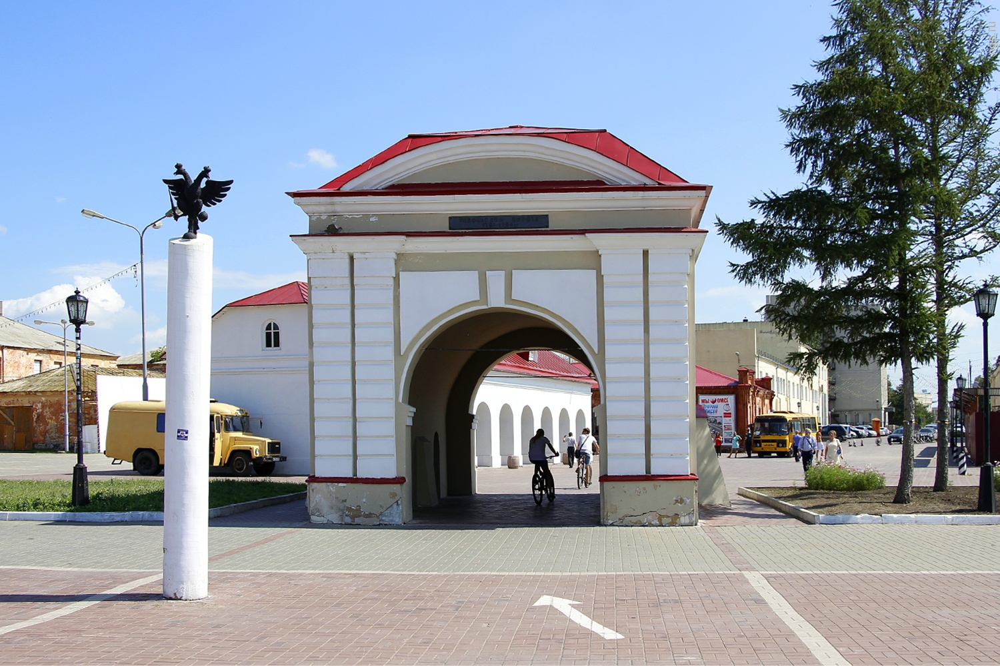

Музеи Омска

Омский областной музей изобразительного искусства имени М. А. Врубеля
Основан в 1924 г., имеет более 30 тыс. экспонатов.
Адреса: ул. Ленина, 3 (Врубелевский корпус),
ул. Ленина, 23 (Генерал-губернаторский дворец), ул. Музейная, 4 (Центр "Эрмитаж-Сибирь").

Омский историко-краеведческий музей
Основан в 1878 г. В фондах хранится свыше 235 тыс. предметов, освещающих историю, природу Омского Прииртышья. Адрес: ул. Ленина, 23А.

Исторический комплекс "Омская крепость"
Это реконструированная часть второй омской крепости XVIII века. Первая крепость заложена в 1716 г., вторая (каменная, чьи здания сохранились) в 1765 г.
Сегодня это музей под открытым небом, вкючающий восстановленные Тобольские и Тарские ворота, денежную кладовую, арсенал и кухню.
Адрес: ул. Партизанская, 5А.